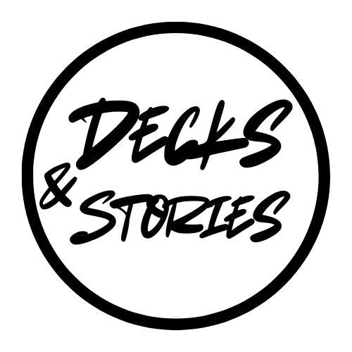

Decks & Stories
Where music reveals identity.
A movement of sound and story.
Where music reveals identity.
A movement of sound and story.
We are an independent collective of music lovers.
Decks & Stories was born from late-night conversations and turntable dreams – an idea that behind every DJ set lies a personal tale worth hearing.
We do this for love, not profit, for connection, not competition.Just sound and the human stories it carries..
We’re not here to impress — we’re here to connect through every beat, every pause, every shift in sound.
There are no headliners here. No one chasing the spotlight.
Everyone plays a part — whether they’re behind the decks or lost in the crowd.
We care about connection. The feeling when a track hits just right.
When sound becomes emotion, and a beat speaks louder than words.
Decks & Stories isn’t about hype, it’s about honesty.
No formulas. No filters. Just presence in the moment.
Because when it’s real — the music finds you.
It doesn’t shout. It resonates — and pulls you into the story, track by track.
We host intimate experiences, elevate raw artistry, and create moments where strangers become friends through shared rhythm. Collaborations aren't a feature – they're a foundation.
Down below is the Past & Upcomming Decks&Stories Events


These are not dusty files — they’re alive. Scroll back through time and relive the journey. Each set carries its moment, mood and meaning.

“Dive into this mix — where vulnerability meets rhythm, and every track reveals a piece of my story.”

“From classical strings to electronic pulses — this journey reflects my passion and evolution in sound.”

“Let these deep basslines and hypnotic grooves guide you through my creative universe.”

“This set is proof that unexpected turns bring artistic rebirth — hope it resonates with you.”

“Feel the Afro House energy — raw, sun-soaked rhythms crafted to uplift your spirit.”

“Echoes from family and late-night sessions in Zimbabwe — let the warmth carry you through.

“Since ’86 I’ve spun deep-rooted beats — here's a carefully curated journey through rhythms and time.”

“Embrace curiosity — every beat here invites you to explore, create, and grow.”

“A heartfelt journey through Afro House — straight to your soul, no detours.”

“From boxing gloves to piano chords — this set weaves discipline with passion.”

“A bridge from uncertainty to clarity — allow this mix to guide your reflection.”

“Melodies meet memory — immerse in this deeply personal soundscape.”

“Seeking authentic connection — these sounds balance depth with atmosphere.”

“Textures and travels — a mix shaped by Africa and Latin America’s heartbeat.”

“From rural roots to creative visions — this set is my journey, shared in sound.”

“Let the beats unite us all — for every rhythm tells a global story.”
Every image is a memory frozen in motion. Vinyl glow, misty silhouettes, sweat, stillness, unity. You can almost hear the moment.
The pictures are comming in soon..